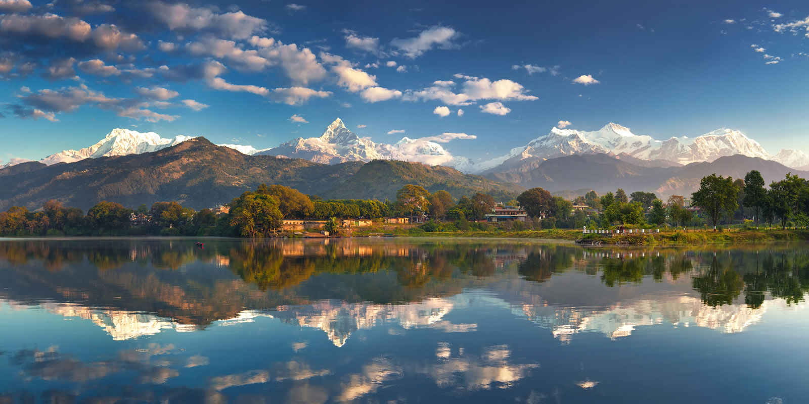

Wandering Souls

Nature lover, leisure-friendly or adventure junkie, Pokhara, a beautiful tourist destination in Nepal has been blessed with tranquility all around. This laid-back neighbour of bustling capital city Kathmandu is the place to relax and recharge your batteries by doing nothing but sitting on the shore of Pokhara lake and witnessing the beauty of snow-capped peaks of Annapurna range. The jaw-dropping beauty of Pokhara attracts many tourists every year but the place has managed to keep its charm intact and still looks untouched. Apart from its laid-back environment, Pokhara is also a gateway to adventure. A well-known as a starting point for trekking and trail expedition to Annapurna makes it the favorite spot for all adventure lovers. Pokhara has further expanded its wings and has become the much-loved vacation destination in Nepal. One can experience ultralight flying, paragliding, skydiving, zip lining, and bungee jumping, or witness a beautiful panoramic view from the Annapurna circuit trek. The otherwise calm city is a complete holiday package for a perfect vacation. One can visit tourist hotspots of Pokhara by taking the city tours to the various museums. Experience the history of Nepal’s Gurkha soldiers at Gorkha Memorial Museum, explore the history and culture of ethnic groups at Regional Museum or simply take a natural stroll at Annapurna Butterfly Museum. Tourists can also take a break from their regular day to day life and enjoy the scenic beauty of Davis Falls, Begnas Lake, Mahendra Cave, Rupa Lake and Basundhara Park. Get away from the stress of regular life and enjoy the peaceful getaway in this beautiful Himalayan region.
The Annapurna range whets your appetite for mountain views right from Pokhara. This is even before you start the trek. At Ghandruk, you get distinct views of Machapuchare, Annapurna South and Hiunchuli. Views of different peaks of the Annapurna massif and Machapuchare stay with you all the way till Sinuwa. The tip of Machapuchare teases you at Dovan. As you burst out of the forest past Himalaya and Deurali, Machapuchare appears before you in its full glory. Machapuchare, the ‘fish tailed mountain’, is revered by the Nepalese for its exquisite beauty. It is believed to be one of the homes of Lord Shiva. It has never been officially summitted! At the Machapuchare base camp, in addition to Machapuchare, you will see Annapurna I, Annapurna South, Gangapurna and Hiunchuli up close. The Annapurna Base Camp is a small cluster of lodges opposite the Annapurna glacier. As you look up from the edge of the glacier, you come face to face with the Annapurna massif. Annapurna I, III and South, Gangapurna, Gandharvachuli and Machapuchare are all there to meet your gaze when your eyes rest upon them. The Annapurna base camp trek is one of the most popular treks in the world. It literally brings you face to face with an eight-thousander – for a moderate-difficult trek, this is incredible! The fascinating Annapurna massif includes the world’s tenth highest peak. Annapurna I (8,091 m) holds an almost fatal attraction for mountaineers. It has the highest fatality ratio among the eight-thousanders. This formidable aura apart, the ABC trek holds several treasures for the mountain lover. Trekking transforms lives. It has changed my life totally. When I see my colleagues at Indiahikes, all of them have been impacted greatly. The transformations have been profound and irreversible. I see it in our trekkers too. I have seen them change professions, careers or start a new life. I have seen them get in and out of relationships, start new projects. These are life-changing experiences. I have seen children building resilience. I have seen families come together. When I see those above 55, I see them rediscover passion and a sense of purpose. These are not small gains. In the mountains new professions, new economies and new businesses have opened up. Our staff no longer go to cities to earn their living. Their income has increased. Above all, they are happiest working in this world. Trekking has been truly transformative. Everyone must absolutely trek. It transforms lives far more than you imagine.
Mount Everest, mountain on the crest of the Great Himalayas of southern Asia that lies on the border between Nepal and the Tibet Autonomous Region of China, at 27°59′ N 86°56′ E. Reaching an elevation of 29,032 feet (8,849 metres), Mount Everest is the highest mountain in the world.Like other high peaks in the region, Mount Everest has long been revered by local peoples. Its most common Tibetan name, Chomolungma, means “Goddess Mother of the World” or “Goddess of the Valley.” The Sanskrit name Sagarmatha means literally “Peak of Heaven.” Its identity as the highest point on the Earth’s surface was not recognized, however, until 1852, when the governmental Survey of India established that fact. In 1865 the mountain—previously referred to as Peak XV—was renamed for Sir George Everest, British surveyor general of India from 1830 to 1843.The Himalayan ranges were thrust upward by tectonic action as the Indian-Australian Plate moved northward from the south and was subducted (forced downward) under the Eurasian Plate following the collision of the two plates between about 40 and 50 million years ago. The Himalayas themselves started rising about 25 to 30 million years ago, and the Great Himalayas began to take their present form during the Pleistocene Epoch (about 2,600,000 to 11,700 years ago). Everest and its surrounding peaks are part of a large mountain massif that forms a focal point, or knot, of this tectonic action in the Great Himalayas. Information from global positioning instruments in place on Everest since the late 1990s indicates that the mountain continues to move a few inches to the northeast and rise a fraction of an inch each year. Everest is composed of multiple layers of rock folded back on themselves (nappes). Rock on the lower elevations of the mountain consists of metamorphic schists and gneisses, topped by igneous granites. Higher up are found sedimentary rocks of marine origin (remnants of the ancient floor of the Tethys Sea that closed after the collision of the two plates). Notable is the Yellow Band, a limestone formation that is prominently visible just below the summit pyramid.Everest is shaped like a three-sided pyramid. The three generally flat planes constituting the sides are called faces, and the line by which two faces join is known as a ridge.
Lumbini is the Buddha's birthplace, located at Rupandehi, Nepal, is one of the world's most important spiritual sites and attracts Buddhist pilgrims from around the world. Today you can visit over twenty-five Buddhist monasteries built by diverse countries from Vietnam to France, study Buddhism, meditate and visit the birthplace within the sacred Mayadevi Gardens. Mayadevi Temple is the most sacred site in the Lumbini Garden where archaeologists have identified the exact spot where Lord Buddha was born. Inscriptions on the Ashoka Pillar nearby also refer to the spot as his birthplace. It is said that the newly born Prince Siddhartha (later became the Buddha) took his first seven steps and delivered his peace message to humanity here. The birth took place in the beautiful Sal grove, which is now the focal point of the Lumbini Garden. Mayadevi, the Queen of Shakya King Suddhodhana of Kapilvastu, while passing through the Lumbini Garden, on the day of Baishakha Purnima (full moon day of May in 623 BC) took a bath in the the Sacred Pond Pushkarini and soon after gave birth to Prince Siddhartha. Visit the remarkably beautiful monasteries built by countries such as China, Japan, Sri Lanka, Myanmar, Germany, France and many more; admire the spectacular and diverse architecture they showcase. Soak up the peaceful atmosphere and above all, visit the Mayadevi Temple which dates back 2,200 years. Walk around the garden or find a quiet spot to contemplate. The focal point for pilgrims is a sandstone carving depicting the birth of the Buddha, believed to have been left here by the Malla King Ripu Malla, in the 14th century, when Mayadevi was worshipped as an incarnation of a Hindu mother goddess. The Ashoka Pillar was built by the great Indian Emperor Ashoka who became a devout Buddhist while visiting the birthplace of the Buddha back in 249 BC. Visit the Panditarama Vipassana Center for some yoga and meditation and interact with the monks who live in the vicinity of the monasteries, devoting their time to bringing peace and harmony to all sentient beings through devotion and religious worship.
Chitwan literally means “heart of the jungle”. The popular Inner Terai valley gets its name from Chitrasen, the Tharu King, who once ruled here. In the southwest corner of Bagmati Province, Chitwan lies between foothills of the Himalaya, the Mahabharat and Siwalik ranges. The region called Chitra Ban in earlier references used to be dense forest abounding in wild animals and resorted by recluse sages meditating deep in the forests. In recent years Chitwan National Park tops the list of things to do in Asia. It is an exciting jungle experience with - jungle safaris, birdwatching, canoe rides and numerous other nature and jungle activities. While the jungles are teeming with wild animals like tigers, leopards and rhinos, along the marshes and rivers are gharial and marsh mugger crocodiles basking in the sun. Chitwan National Park is the first national park of Nepal. It was established in 1973 as the Royal Chitwan National Park and was granted the status of a World Heritage Site in 1984.[1] It covers an area of 952.63 km2 (367.81 sq mi) in the subtropical Inner Terai lowlands of south-central Nepal in Nawalpur, Chitwan, Makwanpur and Parsa Districts. It ranges in elevation from about 100 m (330 ft) in the river valleys to 815 m (2,674 ft) in the Sivalik Hills.[2] In the north and west of the protected area the Narayani-Rapti river system forms a natural boundary to human settlements. Adjacent to the east of Chitwan National Park is Parsa National Park, contiguous in the south is the Indian Tiger Reserve Valmiki National Park. The coherent protected area of 2,075 km2 (801 sq mi) represents the Tiger Conservation Unit (TCU) Chitwan-Parsa-Valmiki, which covers a 3,549 km2 (1,370 sq mi) huge block of alluvial grasslands and subtropical moist deciduous forests. The park headquarters at Kasara is 21 km from Bharatpur which is 20 minutes by air or 145 km by road from Kathmandu. There are resorts and lodges of varying standards outside the national park that cater to the needs of tourists. Reservations can be made at the Kathmandu offices of the various resorts and lodges.

Nepal deserves to be on your bucket list for its beautiful culture, scenic mountain ranges, eclectic cultures, towering peaks and exotic animals. But what you don't give much credit to is the country's bustling nightlife! At first glimpse, you may not be too sure of what Nepal has to offer in terms of clubbing and a vibrant nightlife, but you're in for a surprise. From wild drinking nights, intense gambling sprees at casinos and non-stop dancing to quiet, exciting conversations at pubs and culturally exquisite movie nights, Nepal has it all. Most Nepalis come from an agrarian background, which means that they're the type that sleeps early and rises early too. Most tourist hubs in Nepal are trekking spots and cultural hubs but don't be deterred. There are a few places in the country which boast of a thriving nightlife, and this is where you can go if you're a night owl!This area of Kathmandu is the best place for nightclubs and pubs in the entire country. From swanky bars, thriving discotheques and karaoke bars, Thamel has it all. Durbar Marg is a street in Kathmandu where many Shisha bars, pool clubs and pubs are situated too. Thamel is also quite lenient when it comes to noise laws, which means that you can party well up to 1:00 AM or 2:00 AM.